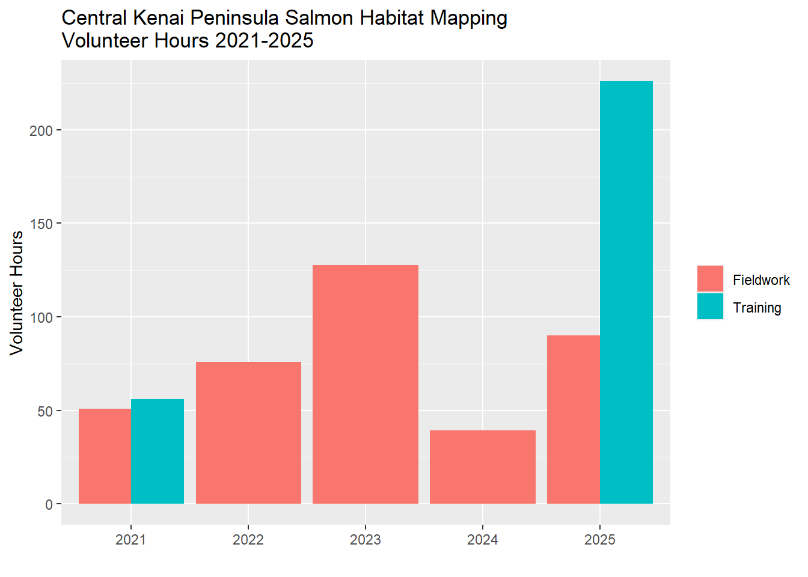
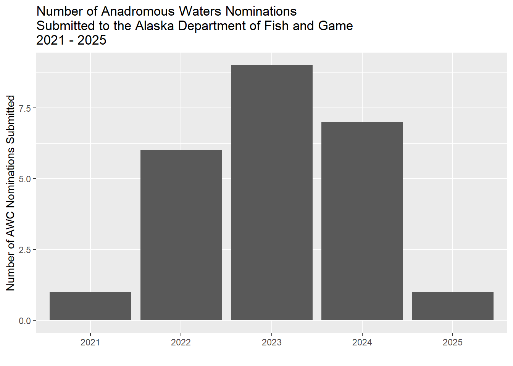

| site | latitude | longitude | site_visits |
|---|---|---|---|
| Beaver Creek MT #10 | 60.61714 | -151.0923 | 2 |
| Beaver Creek Trib 1.1 | 60.57007 | -151.1465 | 1 |
| Beaver Creek Trib 1.2 | 60.57484 | -151.1503 | 1 |
| Beaver Creek Trib 1.3 | 60.57522 | -151.1508 | 1 |
| Bernice Culvert | 60.69047 | -151.3836 | 1 |
| Bird Lake | 60.98049 | -150.4137 | 1 |
| Bird Pond | 60.98346 | -150.4175 | 1 |
| Candlelight - Downstream | 60.56958 | -151.1927 | 1 |
| Candlelight - Upstream | 60.56990 | -151.1932 | 1 |
| Centennial Park Launch | 60.47904 | -151.1045 | 1 |
| Clam Gulch Creek 1 | 60.23948 | -151.4002 | 1 |
| Coal Creek Trib 1 | 60.38256 | -151.1437 | 2 |
| Coal Creek Trib 2.1 | 60.34428 | -151.2201 | 1 |
| Colorado Creek 1 | 60.64451 | -149.5009 | 1 |
| Cooper Creek Mouth | 60.48407 | -149.8810 | 1 |
| Crooked Creek Trib 1.1 | 60.30811 | -151.2824 | 1 |
| Crooked Creek Trib 1.2 | 60.31038 | -151.2829 | 1 |
| Derks Lake Outlet | 60.53088 | -150.9716 | 1 |
| Dolly Varden Way - Downstream | 60.52771 | -150.9845 | 1 |
| Dolly Varden Way - Upstream | 60.52770 | -150.9846 | 1 |
| Eagle Rock Stream | 60.54817 | -151.1118 | 1 |
| East Mackey Lake | 60.53527 | -150.9913 | 1 |
| Forestner Culvert - Downstream | 60.52387 | -150.8068 | 1 |
| Forestner Culvert - Upstream | 60.52383 | -150.8069 | 1 |
| Funny River Rd Trib 1.1 | 60.45978 | -151.0007 | 1 |
| Granite Creek 1.1 | 60.80138 | -149.2035 | 1 |
| Granite Creek 4.1 | 60.78960 | -149.2090 | 1 |
| Isbell 1 | 60.49506 | -150.9683 | 2 |
| KNWR Trib 1 | 60.45829 | -150.8764 | 1 |
| Kasilof Trib 1.1 | 60.33330 | -151.2703 | 1 |
| Kasilof Trib 1.2 | 60.33295 | -151.2707 | 1 |
| Kasilof Trib 2 | 60.32300 | -151.2925 | 1 |
| Lief Hansen Park | 60.55368 | -151.2463 | 1 |
| Lou Morgan Crossing - Downstream | 60.51299 | -150.8596 | 1 |
| Lou Morgan Crossing - Upstream | 60.51336 | -150.8599 | 1 |
| Lower Beaver Creek | 60.56007 | -151.1261 | 1 |
| Lower Soldotna Creek | 60.48335 | -151.0577 | 20 |
| Lower Soldotna Creek | 60.48335 | -151.0577 | 5 |
| Mackey Lakes Crossing - Downstream | 60.52515 | -151.0023 | 1 |
| Mackey Lakes Crossing - Upstream | 60.52515 | -151.0023 | 1 |
| Mackey Lakes Culvet - Downstream | 60.52522 | -151.0021 | 1 |
| Makey Lakes Culvert - Upstream | 60.52508 | -151.0025 | 1 |
| McLain Lake NE | 60.86992 | -150.5788 | 1 |
| Moose River Trib 1 | 60.56372 | -150.7028 | 1 |
| Moose River Trib 1.2 | 60.56126 | -150.6943 | 1 |
| Moose River Trib 1.3 | 60.56302 | -150.6974 | 2 |
| Moose River Trib 1.4 | 60.56000 | -150.6930 | 2 |
| Moose River Trib 1.5 | 60.55808 | -150.6917 | 1 |
| Moose River Trib 1.6 | 60.55702 | -150.6917 | 1 |
| Moose River Trib 1.7 | 60.55654 | -150.6914 | 1 |
| Moose River Trib 2 | 60.55982 | -150.7092 | 1 |
| Moose River Trib 2.1 | 60.55926 | -150.7450 | 1 |
| Moose River Trib 2.2 | 60.56039 | -150.7531 | 1 |
| Moose River Trib 2.3 | 60.56094 | -150.7467 | 1 |
| Moose River Trib 3.1 - Downstream | 60.54928 | -150.7526 | 1 |
| Moose River Trib 3.1 - Upstream | 60.54928 | -150.7526 | 1 |
| Moose River Trib 3.2 | 60.55289 | -150.7606 | 1 |
| No Name Creek (Shqui Tsaina) | 60.56600 | -151.2720 | 1 |
| North Fork Anchor River | 59.80044 | -151.6368 | 1 |
| North Nikiski Lake 1.1 | 60.80209 | -150.9956 | 1 |
| North Nikiski Lake 1.2 | 60.79753 | -150.9860 | 1 |
| North Nikiski Lake 2 | 60.79425 | -150.9874 | 1 |
| Otter Trail 1 | 60.54763 | -150.7359 | 1 |
| Poppy Lane Creek | 60.49551 | -151.2154 | 1 |
| Resurrection Pass Bridge | 60.48393 | -149.9510 | 1 |
| Salamatof Creek | 60.63943 | -151.3175 | 1 |
| Savena Lake Trib | 60.55695 | -150.9991 | 1 |
| Seven Egg Creek | 60.93470 | -150.7131 | 1 |
| Sixmile Trib 1.1 | 60.74404 | -149.3669 | 1 |
| Sixmile Trib 2 | 60.72671 | -149.3176 | 1 |
| Snag Lake South | 60.81345 | -150.6901 | 1 |
| Soldotna Creek Mouth | 60.48335 | -151.0577 | 5 |
| Soldotna Creek Parcel 1 | 60.49508 | -151.0156 | 1 |
| Soldotna Creek Parcel 2 | 60.49537 | -151.0150 | 1 |
| Soldotna Creek Parcel 3 | 60.49496 | -151.0146 | 1 |
| Soldotna Creek Parcel 4 | 60.49453 | -151.0146 | 1 |
| South Mackey Pond | 60.52231 | -151.0076 | 2 |
| Strawberry Rd Corridor | 60.57591 | -151.0571 | 1 |
| Strawberry Rd Corridor 2 | 60.58944 | -151.0624 | 1 |
| Summit Lake Outlet | 60.64234 | -149.4940 | 1 |
| Suneva Lake | 60.75166 | -151.1941 | 2 |
| Tree Lake | 60.55918 | -150.9184 | 1 |
| Union Lake 1 | 60.52505 | -151.0340 | 1 |
| Unknown Nikiski Creek 1 | 60.77920 | -151.0813 | 1 |
| Unknown Nikiski Lake 1 | 60.77243 | -151.0866 | 1 |
| Unknown Nikiski Lake 2 | 60.76791 | -151.0720 | 1 |
| Unnamed Kenai Trib 1 - Upstream | 60.52016 | -150.8649 | 1 |
| Unnamed Kenai Trib 1.1 | 60.51832 | -150.8653 | 1 |
| Unnamed Kenai Trib 1.2 | 60.51828 | -150.8619 | 1 |
| Upper Ohmer Lake | 60.45573 | -150.2857 | 1 |
| Upper Savena Lake Trib | 60.56934 | -151.0366 | 1 |
| Upper Soldotna Creek 1 | 60.55580 | -150.9228 | 1 |
| WalMart Creek | 60.56560 | -151.2213 | 2 |
| West Beck Lake 1 | 60.72683 | -151.1413 | 1 |
| West Beck Lake 2 | 60.72763 | -151.1438 | 1 |
| West Fork Beaver Creek Bridge - Downstream | 60.64054 | -151.0839 | 1 |
| West Fork Beaver Creek Bridge - Upstream | 60.64064 | -151.0840 | 1 |
| West Mackey Lake | 60.52338 | -151.0073 | 1 |
| West Mackey Lake 2 | 60.52371 | -151.0066 | 1 |
| soldotna_creek2 | 60.54188 | -150.9276 | 1 |
| NA | NA | NA | 2 |
3 Results
Note: All fishing effort and capture results are current as of 2024-10-25.
3.1 Fish capture
During fieldwork in summers 2021 - 2024:
Over course of 77 fieldwork days 2021 - 2024 (including the training event), we conducted a total of 135 sampling events at 100 unique sites. See the interactive project map in the Methods section (“Site selection”) for a current map of where nominations have occurred.
Table Table 3.1 summarises total sampling events by individual site. We typically sampled a site only one time each.
We have captured 4731 fish comprised of 14 unique species. Table Table 3.2 summarizes current fish capture count by species.
Table Table 3.3 summarizes total fish capture for each species by site.
| species | n |
|---|---|
| Alaska blackfish | 9 |
| Chinook salmon | 19 |
| Dolly Varden | 74 |
| Pacific salmon-unspecified | 227 |
| coho salmon | 854 |
| lamprey-unspecified | 107 |
| ninespine stickleback | 46 |
| rainbow trout | 74 |
| salmonid, unspecified | 3 |
| sculpin-unspecified | 160 |
| slimy sculpin | 103 |
| sockeye salmon | 2 |
| stickleback-unspecified | 2924 |
| threespine stickleback | 129 |
| site | Alaska blackfish | Chinook salmon | Dolly Varden | Pacific salmon-unspecified | coho salmon | lamprey-unspecified | ninespine stickleback | rainbow trout | salmonid, unspecified | sculpin-unspecified | slimy sculpin | sockeye salmon | stickleback-unspecified | threespine stickleback |
|---|---|---|---|---|---|---|---|---|---|---|---|---|---|---|
| Candlelight - Downstream | 1 | 0 | 0 | 0 | 0 | 0 | 0 | 0 | 0 | 0 | 0 | 0 | 0 | 0 |
| WalMart Creek | 8 | 0 | 0 | 0 | 0 | 0 | 0 | 0 | 2 | 0 | 0 | 0 | 0 | 0 |
| Centennial Park Launch | 0 | 6 | 0 | 0 | 0 | 0 | 0 | 0 | 0 | 0 | 0 | 0 | 0 | 2 |
| Crooked Creek Trib 1.2 | 0 | 1 | 0 | 0 | 2 | 0 | 0 | 0 | 0 | 0 | 0 | 0 | 0 | 0 |
| Lower Soldotna Creek | 0 | 10 | 9 | 1 | 437 | 7 | 3 | 47 | 1 | 101 | 76 | 2 | 16 | 13 |
| Soldotna Creek Mouth | 0 | 2 | 0 | 0 | 86 | 0 | 0 | 3 | 0 | 43 | 0 | 0 | 2 | 1 |
| Clam Gulch Creek 1 | 0 | 0 | 1 | 0 | 12 | 0 | 0 | 0 | 0 | 0 | 0 | 0 | 1 | 0 |
| Cooper Creek Mouth | 0 | 0 | 1 | 0 | 5 | 0 | 0 | 3 | 0 | 2 | 0 | 0 | 0 | 0 |
| Forestner Culvert - Downstream | 0 | 0 | 2 | 0 | 6 | 0 | 0 | 0 | 0 | 0 | 0 | 0 | 0 | 0 |
| Funny River Rd Trib 1.1 | 0 | 0 | 5 | 0 | 2 | 0 | 0 | 0 | 0 | 0 | 0 | 0 | 0 | 0 |
| Granite Creek 1.1 | 0 | 0 | 4 | 0 | 5 | 0 | 0 | 0 | 0 | 0 | 0 | 0 | 0 | 0 |
| Granite Creek 4.1 | 0 | 0 | 4 | 0 | 5 | 0 | 0 | 0 | 0 | 0 | 0 | 0 | 0 | 0 |
| Isbell 1 | 0 | 0 | 4 | 0 | 3 | 0 | 0 | 0 | 0 | 0 | 0 | 0 | 0 | 0 |
| KNWR Trib 1 | 0 | 0 | 2 | 0 | 3 | 0 | 4 | 0 | 0 | 2 | 0 | 0 | 0 | 0 |
| Moose River Trib 1 | 0 | 0 | 1 | 0 | 7 | 0 | 0 | 0 | 0 | 0 | 0 | 0 | 0 | 0 |
| Moose River Trib 1.2 | 0 | 0 | 1 | 0 | 5 | 0 | 0 | 0 | 0 | 0 | 0 | 0 | 0 | 0 |
| Moose River Trib 1.3 | 0 | 0 | 2 | 0 | 18 | 0 | 0 | 1 | 0 | 0 | 0 | 0 | 0 | 0 |
| Moose River Trib 1.5 | 0 | 0 | 3 | 0 | 6 | 0 | 0 | 0 | 0 | 0 | 0 | 0 | 0 | 0 |
| Moose River Trib 2.1 | 0 | 0 | 1 | 0 | 2 | 0 | 0 | 0 | 0 | 0 | 0 | 0 | 0 | 0 |
| Moose River Trib 2.2 | 0 | 0 | 3 | 0 | 4 | 0 | 0 | 0 | 0 | 0 | 0 | 0 | 0 | 0 |
| Moose River Trib 2.3 | 0 | 0 | 1 | 0 | 13 | 0 | 0 | 0 | 0 | 0 | 0 | 0 | 0 | 0 |
| Otter Trail 1 | 0 | 0 | 2 | 0 | 20 | 0 | 4 | 0 | 0 | 0 | 0 | 0 | 0 | 0 |
| Sixmile Trib 2 | 0 | 0 | 2 | 0 | 58 | 0 | 0 | 0 | 0 | 0 | 0 | 0 | 0 | 0 |
| Unnamed Kenai Trib 1.1 | 0 | 0 | 18 | 0 | 7 | 0 | 0 | 0 | 0 | 0 | 0 | 0 | 0 | 0 |
| Unnamed Kenai Trib 1.2 | 0 | 0 | 1 | 0 | 4 | 0 | 0 | 0 | 0 | 0 | 0 | 0 | 0 | 0 |
| Upper Ohmer Lake | 0 | 0 | 2 | 0 | 0 | 0 | 0 | 4 | 0 | 0 | 0 | 0 | 0 | 0 |
| Upper Soldotna Creek 1 | 0 | 0 | 5 | 0 | 16 | 0 | 0 | 0 | 0 | 0 | 0 | 0 | 37 | 0 |
| Eagle Rock Stream | 0 | 0 | 0 | 1 | 2 | 0 | 2 | 0 | 0 | 0 | 1 | 0 | 0 | 0 |
| North Fork Anchor River | 0 | 0 | 0 | 225 | 0 | 100 | 0 | 0 | 0 | 4 | 0 | 0 | 0 | 0 |
| Beaver Creek MT #10 | 0 | 0 | 0 | 0 | 15 | 0 | 13 | 0 | 0 | 1 | 0 | 0 | 0 | 0 |
| Beaver Creek Trib 1.1 | 0 | 0 | 0 | 0 | 11 | 0 | 17 | 0 | 0 | 0 | 0 | 0 | 0 | 0 |
| Beaver Creek Trib 1.2 | 0 | 0 | 0 | 0 | 3 | 0 | 1 | 0 | 0 | 0 | 0 | 0 | 0 | 0 |
| Beaver Creek Trib 1.3 | 0 | 0 | 0 | 0 | 6 | 0 | 0 | 0 | 0 | 0 | 0 | 0 | 0 | 0 |
| Coal Creek Trib 1 | 0 | 0 | 0 | 0 | 17 | 0 | 0 | 0 | 0 | 2 | 0 | 0 | 3 | 0 |
| Derks Lake Outlet | 0 | 0 | 0 | 0 | 2 | 0 | 0 | 0 | 0 | 0 | 0 | 0 | 160 | 0 |
| Dolly Varden Way - Upstream | 0 | 0 | 0 | 0 | 2 | 0 | 0 | 0 | 0 | 0 | 0 | 0 | 8 | 0 |
| Forestner Culvert - Upstream | 0 | 0 | 0 | 0 | 7 | 0 | 0 | 0 | 0 | 0 | 0 | 0 | 0 | 0 |
| Kasilof Trib 2 | 0 | 0 | 0 | 0 | 4 | 0 | 0 | 0 | 0 | 0 | 0 | 0 | 0 | 0 |
| Lower Beaver Creek | 0 | 0 | 0 | 0 | 16 | 0 | 0 | 1 | 0 | 0 | 2 | 0 | 0 | 0 |
| Mackey Lakes Culvet - Downstream | 0 | 0 | 0 | 0 | 7 | 0 | 0 | 7 | 0 | 0 | 0 | 0 | 179 | 0 |
| Moose River Trib 1.4 | 0 | 0 | 0 | 0 | 9 | 0 | 0 | 0 | 0 | 0 | 0 | 0 | 0 | 0 |
| Moose River Trib 3.1 - Downstream | 0 | 0 | 0 | 0 | 1 | 0 | 0 | 0 | 0 | 0 | 0 | 0 | 0 | 0 |
| No Name Creek (Shqui Tsaina) | 0 | 0 | 0 | 0 | 1 | 0 | 0 | 0 | 0 | 0 | 0 | 0 | 0 | 0 |
| North Nikiski Lake 1.1 | 0 | 0 | 0 | 0 | 2 | 0 | 0 | 1 | 0 | 0 | 9 | 0 | 0 | 0 |
| North Nikiski Lake 1.2 | 0 | 0 | 0 | 0 | 2 | 0 | 0 | 0 | 0 | 0 | 9 | 0 | 0 | 49 |
| Resurrection Pass Bridge | 0 | 0 | 0 | 0 | 1 | 0 | 0 | 0 | 0 | 5 | 0 | 0 | 0 | 0 |
| Savena Lake Trib | 0 | 0 | 0 | 0 | 10 | 0 | 0 | 0 | 0 | 0 | 0 | 0 | 18 | 0 |
| Tree Lake | 0 | 0 | 0 | 0 | 1 | 0 | 0 | 0 | 0 | 0 | 0 | 0 | 75 | 0 |
| West Fork Beaver Creek Bridge - Upstream | 0 | 0 | 0 | 0 | 3 | 0 | 0 | 0 | 0 | 0 | 0 | 0 | 0 | 0 |
| West Mackey Lake | 0 | 0 | 0 | 0 | 3 | 0 | 0 | 0 | 0 | 0 | 0 | 0 | 200 | 0 |
| West Mackey Lake 2 | 0 | 0 | 0 | 0 | 3 | 0 | 0 | 0 | 0 | 0 | 0 | 0 | 103 | 0 |
| Unknown Nikiski Lake 1 | 0 | 0 | 0 | 0 | 0 | 0 | 2 | 0 | 0 | 0 | 0 | 0 | 0 | 0 |
| Bird Lake | 0 | 0 | 0 | 0 | 0 | 0 | 0 | 2 | 0 | 0 | 0 | 0 | 3 | 0 |
| Summit Lake Outlet | 0 | 0 | 0 | 0 | 0 | 0 | 0 | 5 | 0 | 0 | 0 | 0 | 1 | 0 |
| McLain Lake NE | 0 | 0 | 0 | 0 | 0 | 0 | 0 | 0 | 0 | 0 | 2 | 0 | 194 | 0 |
| North Nikiski Lake 2 | 0 | 0 | 0 | 0 | 0 | 0 | 0 | 0 | 0 | 0 | 2 | 0 | 8 | 0 |
| Snag Lake South | 0 | 0 | 0 | 0 | 0 | 0 | 0 | 0 | 0 | 0 | 2 | 0 | 44 | 0 |
| Bernice Culvert | 0 | 0 | 0 | 0 | 0 | 0 | 0 | 0 | 0 | 0 | 0 | 0 | 51 | 0 |
| Dolly Varden Way - Downstream | 0 | 0 | 0 | 0 | 0 | 0 | 0 | 0 | 0 | 0 | 0 | 0 | 20 | 0 |
| East Mackey Lake | 0 | 0 | 0 | 0 | 0 | 0 | 0 | 0 | 0 | 0 | 0 | 0 | 99 | 0 |
| Mackey Lakes Crossing - Upstream | 0 | 0 | 0 | 0 | 0 | 0 | 0 | 0 | 0 | 0 | 0 | 0 | 28 | 0 |
| Salamatof Creek | 0 | 0 | 0 | 0 | 0 | 0 | 0 | 0 | 0 | 0 | 0 | 0 | 445 | 0 |
| South Mackey Pond | 0 | 0 | 0 | 0 | 0 | 0 | 0 | 0 | 0 | 0 | 0 | 0 | 168 | 0 |
| Suneva Lake | 0 | 0 | 0 | 0 | 0 | 0 | 0 | 0 | 0 | 0 | 0 | 0 | 10 | 51 |
| Union Lake 1 | 0 | 0 | 0 | 0 | 0 | 0 | 0 | 0 | 0 | 0 | 0 | 0 | 1009 | 0 |
| Unknown Nikiski Lake 2 | 0 | 0 | 0 | 0 | 0 | 0 | 0 | 0 | 0 | 0 | 0 | 0 | 7 | 8 |
| soldotna_creek2 | 0 | 0 | 0 | 0 | 0 | 0 | 0 | 0 | 0 | 0 | 0 | 0 | 35 | 0 |
| Kasilof Trib 1.1 | 0 | 0 | 0 | 0 | 0 | 0 | 0 | 0 | 0 | 0 | 0 | 0 | 0 | 3 |
| West Beck Lake 2 | 0 | 0 | 0 | 0 | 0 | 0 | 0 | 0 | 0 | 0 | 0 | 0 | 0 | 2 |
3.2 AWC Nominations
Fish capture data was evaluated against the 2024 Anadromous Waters Catalog to identify new stream segment nominations. Complete submission materials for 2021 - 2023 may be accessed in the project Google Drive folder (link), sent to the ADF&G Habitat Division in Anchorage in the fall of each year. In 2024 we submitted all nominations through the Fish Map App smartphone application from the Alaska Conservation Foundation
Total Anadromous Waters Nominations
As of October 2024, a total length of 21.1 miles of stream segments and 173 lake acres were included in our 23 nominations.
Tables Table 3.4 and Table 3.5 below breaks down each stream segment nomination by length and lake by area.
| nomination_name | nomination | total_stream_length_km |
|---|---|---|
| Soldotna Creek Parcel | 2021 | 1.01 |
| Beaver Creek Trib 1.3 | 2022 | 2.01 |
| Coal Creek Trib 1 | 2022 | 5.20 |
| Crooked Creek Trib 1.1 | 2022 | 0.19 |
| Funny River Rd Trib 1.1 | 2022 | 1.21 |
| KNWR Trib | 2022 | 3.11 |
| Moose River Trib 1 | 2022 | 3.06 |
| Beaver Creek MT #10 | 2023 | 1.32 |
| Clam Gulch Creek 1 | 2023 | 0.47 |
| Forstner Avenue | 2023 | 1.87 |
| Mackey Lakes Culvert | 2023 | 0.48 |
| Moose River Trib 1 | 2023 | 0.75 |
| Moose River Trib 2 | 2023 | 2.57 |
| Moose River Trib 3 | 2023 | 0.74 |
| Savena Lake Tributary | 2023 | 2.38 |
| Unnamed Kenai Trib 1 | 2023 | 1.89 |
| Eagle Rock | 2024 | 0.09 |
| Granite Creek 1.1 | 2024 | 4.23 |
| Granite Creek 4.1 | 2024 | 0.06 |
| Isbell | 2024 | 1.16 |
| Otter Trail | 2024 | 0.02 |
| Sixmile Trib | 2024 | 0.13 |
| nomination_name | nomination | total_lake_area_hectares |
|---|---|---|
| West Mackey Lake | 2023 | 68.32 |
| Granite Creek Trib Lake | 2024 | 2.08 |

For general background on nominations, see the slides linked here, presented at Kenai Watershed Forum’s Fireside Chat series held at Kenai River Brewing on November 1, 2023.
3.3 Volunteer participation
Volunteer recruitment efforts resulted in a steadily increasing level of participation from the general public. A total of 350 volunteer hours were documented throughout the project, with an initial higher outlay in 2021 to initiate training.

The level of volunteer participation, along with experience gained, closely tracked the quantity of nominations submitted each year, with a steadily rising number of nominations from 2021 to 2023. 2024 saw very minimal fudning resources directed towards fieldwork, thus the number of volunteer hours declined. Despite this reduced funding in 2024, six nominations were submitted. The result speaks to how sustained financial support, even if fluctuating in amount, is important to keep projects such as this in progress.
s

3.4 Aquatic Resource Permit
Fish capture data was reformatted each fall in to a csv file for submission to ADF&G in fulfillment of the required Aquatic Resource Permit1; available in the online in this project’s GitHub repo2.